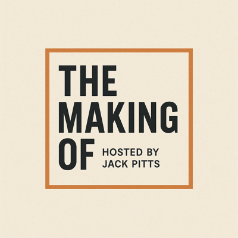

The Making Of
Hosted By Jack Pitts
Honest conversations with the founders, investors, and operators who build things. No fluff. No PR speak.

Conversations with the people who build things.
Jack hosts The Making Of Hosted By Jack Pitts, a podcast dedicated to honest conversations with founders, investors, and operators. No fluff. No PR speak. Just real talk about how businesses are built, deals are done, and industries evolve.
It's also a window into how we think. The same curiosity and rigor we bring to every client conversation shows up in every episode.
Gary Dennis
Gary Dennis left investment banking to build Mammoth Holdings into one of the country's leading car wash platforms, growing through 30-plus acquisitions and a partnership with the Pritzker Organization before stepping back as CEO after nearly 20 years. A first-generation kid from Macon, Georgia who treated car washes like manufacturing plants and memberships like a science.
Listen on SpotifyTaylor's Candy
Doug Taylor, known as the Candyman, turned a small family operation into a full candy distribution and manufacturing business, picking up Windy City Popcorn along the way and steering through COVID with everything on the line. A conversation about building something real in an industry that runs entirely on relationships.
Listen on Spotify